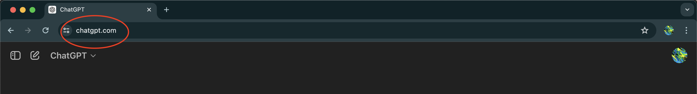
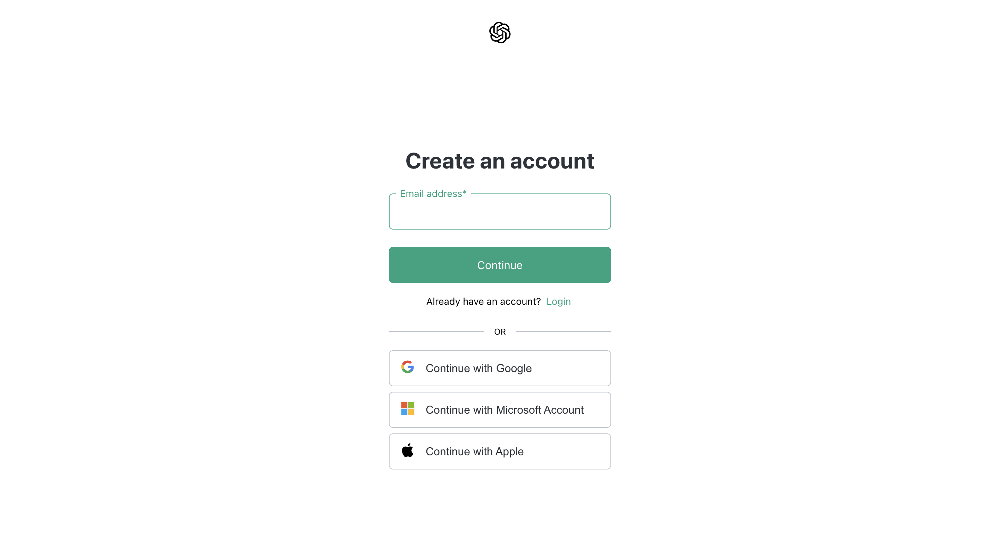

InstructAI
Simple and easy ChatGPT tutorials
Getting started using ChatGPT
- To access ChatGPT for free online simply search for ChatGPT in your browser of choice, or head to chatgpt.com

- Next, to actually use the service you have two options: you can sign up or you can chat as a guest. Although both are fairly similar, I would reccommend creating an account as it has many perks such as saving chats, access to more features, and more personalization. It is also extremely easy to create an account using a pre-existing Google, Microsoft, or Apple account.

- After that, you're going to have to do what you came here for. Chatting with ChatGPT! To do this, click the text box at the bottom of the screen and type whatever you want ChatGPT to read. Once you've typed in your message, press the ENTER key on your keyboard and watch ChatGPT answer to your message. It may be an instant response, or it may be a few seconds depending on
- Congratulations! Now you have successfully chatted with an AI chatbot, and hopefully achieved your goal with this tutorial.